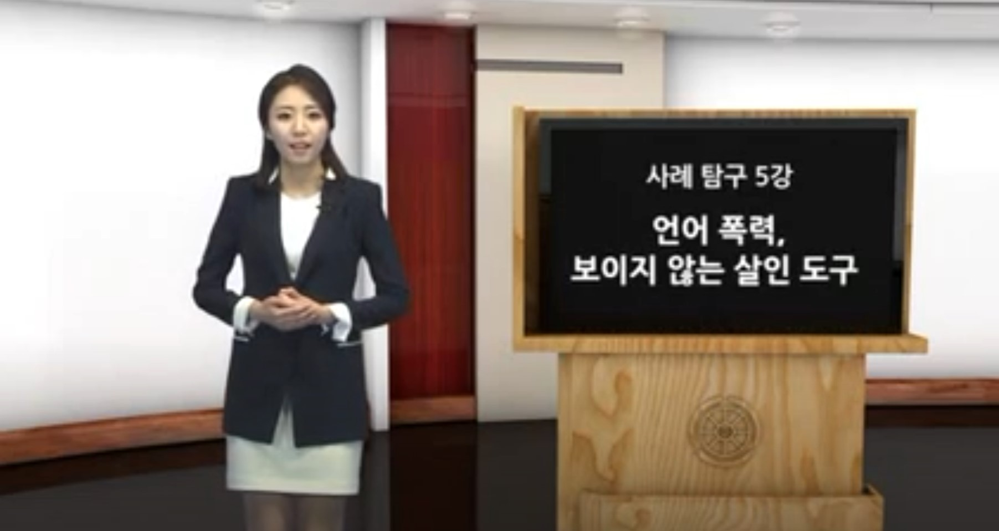

|  |  |
 |
 |
언어 폭력, 보이지 않는 살인의 도구(10분 11초) 학교에서 발생한 언어폭력 문제에 대한 네거티브 콘텐츠(뉴스) 시청을 통해 경각심 전달 |
공동체에 공헌하기(톤즈 마을의 이태석 신부 이야기) 한살공 프로젝트 워크북(115p) 공동체의 생명을 위하는 사례를 살펴보며 우리 삶과 공동체에 대한 공헌을 반성 및 실천 의지 제고 |
안다미로 6. 피할 수 없는 갈등, 어떻게 해야할까(122p) 가족, 남녀, 친구 사이에 일어날 수 있는 갈등의 원인을 파악하고 극복하기 위한 해결책 찾는 연습하기 |
마음으로 듣기, 마음으로 말하기 공감하고 배려하는 듣기와 말하기를 통한 소통의 중요성 전달 |